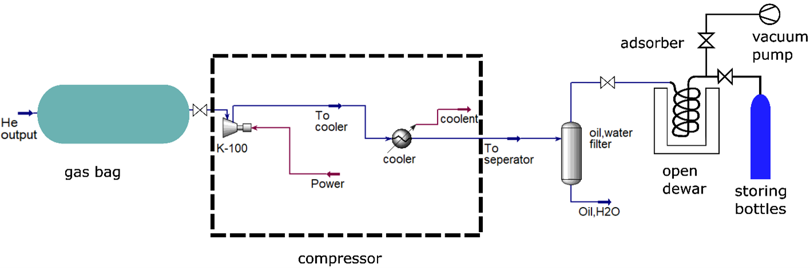
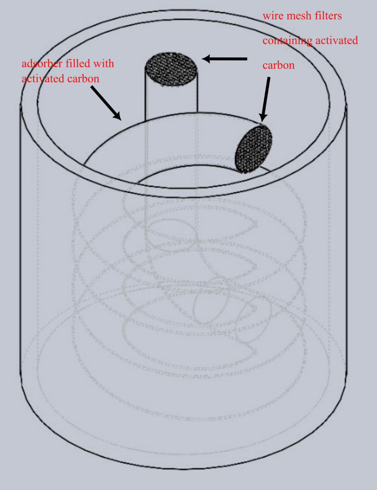
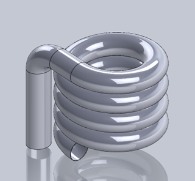

Helium Recovery System
Design of a cryogenic helium capture, compression, and purification system
Overview
Designed a helium recovery system for the University of Melbourne Thermodynamics Laboratory to reduce helium loss, operational cost, and environmental impact. The system captures, compresses, and purifies helium to 99.999% (5N) for reuse in cryogenic experiments.
Problem
Helium is a finite and non-renewable resource with increasing global cost due to supply chain disruptions. The laboratory currently vents all used helium, resulting in significant financial loss and inefficiency.
- Annual liquid helium cost: ~$32,000
- Gas consumption: ~13.9 m³/year
- No existing recovery infrastructure
Design Objectives
- Recover up to 20 m³ of helium per day
- Purify helium from 95% → 99.999% (5N)
- Ensure cost recovery within 5 years
- Maintain reliable and scalable operation
Engineering Approach
Three primary methods exist for purifying helium: cryogenic distillation, cryogenic adsorption, and membrane separation. Cryogenic distillation, the most common method for extracting helium from natural gas, is typically used for purification from near-zero concentrations. Consequently, it is unsuitable for our laboratory's helium stream, and the system is more costly to construct and operate compared to alternative approaches. Membrane separation offers the lowest cost and simplest operation; however, it can only achieve approximately 95% purity, while our quality requirement is 99.999% [4].
The last method is pressure swing adsorption (PSA), which applies the adsorption of nitrogen at high pressure and cryogenic temperatures to purify helium. This method is appropriate for helium streams with relatively high initial purity, as the adsorption capacity is dependent on the impurity concentration. The adsorber reaches a saturation point, beyond which it can no longer adsorb impurities and requires regeneration. Adsorption techniques are currently employed in numerous laboratories worldwide, with the Institute for Technical Physics (ITEP) [5] serving as a notable example, demonstrating the feasibility of this method within our laboratory's budgetary constraint.
According to A. Saberimoghaddam [6], nitrogen adsorption on carbon occurs with highest purity at 77K and 60 bar. Their research demonstrated promising results, achieving 7N (99.99999%) purity under these temperature and pressure conditions, thereby satisfying our purity requirement.
| Property | Cryogenic distillation | Membrane | Pressure swing adsorption (PSA) |
|---|---|---|---|
| Intake purity | 0.03% | 0.03% | >90% |
| Output purity | >5N (99.999%) | 95% | >5N (99.999%) |
| Complexity | High | Low | Low |
| Efficiency (how much helium recover) | 98% | 75% | 98% |
| Fixed cost | High (>$100k) | Medium (>$10k) | Medium(>$10k) |
| Feasibility | Low | High | High |
Table 1: Comparison between 3 recovery methods
System Design
- Gas Bag: Stores ~22 m³ helium per experiment
- Compressor: 60 bar helium compression (Minnuo)
- Filter: Oil & water removal to protect adsorber
- Purifier: PSA-based nitrogen removal at 77K

Adsorber Design
Designed a cryogenic adsorption system using activated carbon to remove nitrogen impurities.
- Activated carbon required: ~7 kg
- Operating temperature: 77K (liquid nitrogen cooled)
- Helical coil design for compactness
- Pressure drop: ~57 Pa (negligible vs 60 bar)
General Adsorber Design
Overview of the complete cryogenic adsorption system showing the helical coil arrangement and cooling mechanism.

Adsorber Cover Design
Detailed design of the adsorber cover showing sealing mechanisms and connection points for helium inlet/outlet.

Wire Mesh Filter Design
Close-up view of the wire mesh filter used to contain activated carbon particles while allowing helium flow through the system.

Performance & Operation
- Recovery capacity: ~10 Nm³/hr
- Adsorber saturation time: ~97 minutes
- Regeneration required between cycles
- Liquid nitrogen usage: ~46.8 L/hr
Economic Analysis
- Total system cost: ~$27,000 AUD
- Market alternatives: ~$200,000 AUD
- Operating cost: ~$46.8/hr
- Helium recovery value: ~$777.9/hr
Payback period: ~37 hours of operation
Impact
This system significantly reduces helium waste while lowering operational costs. It also supports sustainable laboratory practices and provides a scalable foundation for future noble gas recovery systems.
What I Learned
- System-level engineering design under real constraints
- Trade-offs between cost, efficiency, and feasibility
- Integration of thermodynamics, fluid mechanics, and process design
References
- National Academies of Sciences, Engineering, and Medicine. (2000). Helium supply, present and future. In "The impact of selling the Federal Helium Reserve" (pp. 40). National Academies Press. https://doi.org/10.17226/9860
- Mullins, W. (2023, September). Helium prices surge to record levels as shortage continues. "Physics Today", 76(9), 18. https://pubs.aip.org/physicstoday/article/76/9/18/2908156/Helium-prices-surge-to-record-levels-as-shortage
- Melbourne Energy Institute. (2024, July 23). Safe and efficient hydrogen liquefication and plant design. The University of Melbourne. https://energy.unimelb.edu.au/about-us/news/news-archive/safe-and-efficient-hydrogen-liquefication-and-plant-design
- Quader, M. A., Rufford, T. E., & Smart, S. (2020). Modeling and cost analysis of helium recovery using combined-membrane process configurations. Separation and Purification Technology, 236, 116269. https://doi.org/10.1016/j.seppur.2019.116269
- Institute for Technical Physics. (n.d.). Helium purifier. Karlsruhe Institute of Technology. https://www.itep.kit.edu/english/helium_purifier.php
- Saberimoghaddam, A., & Khebri, V. (2018). Design and construction of a helium purification system using cryogenic adsorption process. Iranian Journal of Chemical Engineering, 15(1), 89-101. https://www.ijche.com/article_63150_16a36a76860ad629abbad361df41a8db.pdf
- CMR Direct. (n.d.). Dewar OD50-359. Retrieved March 2, 2025, from https://www.cmr-direct.com/shop/02-24-029-dew-od50-359
- Total Tools. (n.d.). SpeedGas welding gas exchange argon G size. Total Tools. Retrieved March 2, 2025, from https://www.totaltools.com.au/121020-speedgas-welding-gas-exchange-argon-g-size-argrp
- Barron, R. F. (1985). Cryogenic systems. Oxford University Press.
- Clark, J., Thorogood, R. and Haselden, G., Cryogenic fundamentals, Academic Press, London, (1971)
- Bhushan, J. (2011). Helium purification by gas adsorption method (Master's thesis). National Institute of Technology Rourkela.